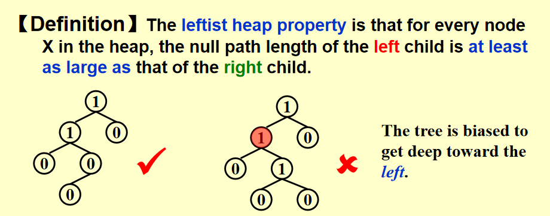
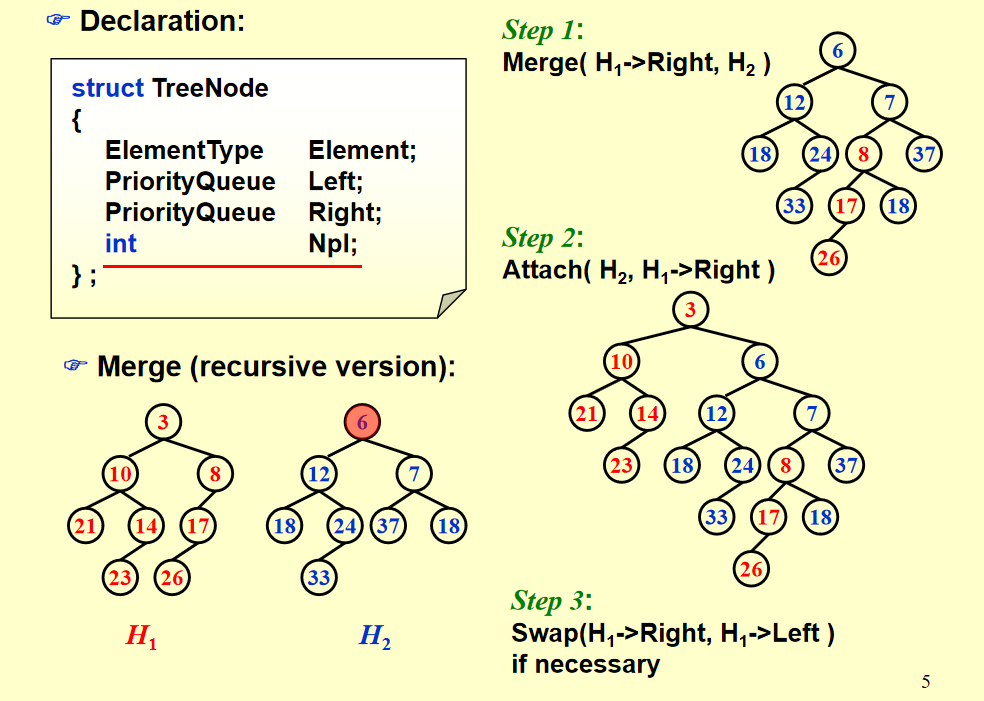

Lesson4：左倾堆与倾斜堆
复习(忘光了咋办)
gpt:孩子们，我没干
堆的基本概念
堆是一种完全二叉树，它有以下两个主要性质：
堆的形状性质：
堆是一个完全二叉树，即除了最底层，其他层的节点都必须填满，并且最底层的节点按从左到右排列。 堆的顺序性质：
- 最大堆（Max Heap）：每个父节点的值都大于或等于它的子节点的值，即父节点是最大值。
- 最小堆（Min Heap）：每个父节点的值都小于或等于它的子节点的值，即父节点是最小值。
堆的操作
堆有几个常用操作：
- 插入操作（Insert）：将一个新元素插入到堆中。 首先将新元素放在堆的最底层的空位（完全二叉树的特性保证了这是正确的位置）。 然后执行“上浮”操作：如果新插入的元素比父节点大（对于最大堆）或小（对于最小堆），就交换它和父节点，直到满足堆的顺序性质。
-
删除操作（Delete）：通常删除堆顶元素（最大堆删除最大元素，最小堆删除最小元素）。 删除堆顶元素后，将堆的最底层最右边的元素放到堆顶。 然后执行“下沉”操作：将这个新放上去的元素与其子节点进行比较，如果它不满足堆的顺序性质，就与较大的子节点（对于最大堆）或较小的子节点（对于最小堆）交换，直到堆的性质恢复。
-
堆化操作（Heapify）：将一个无序的数组转换成堆的过程。
这个操作通常是自底向上的，也就是从数组的最后一个非叶子节点开始，逐步向上执行“下沉”操作，直到堆的性质被完全恢复。
-
合并操作（Merge）：将两个堆合并为一个堆。这个操作在一些堆的变种（如左倾堆、倾斜堆等）中很常见，旨在优化合并效率。
-
时间复杂度
-
插入操作：\(𝑂(logn)\) 因为插入一个元素后最多需要向上调整树的高度。
-
删除操作：\(𝑂(logn)\) 因为删除堆顶元素后需要将最后一个元素下沉到合适的位置。
-
堆化操作：\(O(n)\) 因为从最底层开始，每个节点最多执行一次“下沉”操作，而树的高度是对数级别的。
-
获取最大/最小元素：\(O(1)\) 堆顶就是最大值或最小值。
-
左倾堆
好的孩子们我复活了。
Discussion 5: How fast can we merge two heaps if we simply use the original heap structure?
我们假设两个堆各自有m、n个元素，那么依据之前简单的方法就只能逐个插入，因此时间复杂度为\(O(mlogn)\)或\(O(nlogm)\)。
定义：对于一个节点X，Null Path Length（简称 NPL）是从节点X 到一个没有两个子节点（即“叶子节点”或只有一个子节点的节点）的最短路径的长度。如果节点X本身是空节点（NULL），则定义NPL(NULL)=-1。
Npl(X) = min{ Npl(C) + 1 for all C as children of X }这是一个递归定义。
左倾堆性质：对于堆中的每个节点 X，左子节点的空路径长度至少与右子节点的空路径长度相等或更大。
当然左倾堆已经不满足完全二叉树的形状性质了。

根左孩子节点：红温了
根据上面这个例子不行的原因，我们从侧面推出了某些性质，比如叶子节点与仅有一个孩子的节点，其Npl值都为0。
定理：一个在右路径有r个节点的左倾堆，其节点数至少为2r-1，这一定理使用数学归纳法证明。
Discussion 6:How long is the right path of a leftist tree of N nodes? What does this conclusion mean to us?
答案是⌊log(N+1)⌋个节点，这利用上面就可以推出。
我们主要考虑插入insertion与合并merge两个操作，其中插入可以看作是另类的合并。
所以我们知道左式堆的右路经至多有⌊log(N+1)⌋个节点，所以希望把操作都放到右路经上执行。
-
Step 1: Merge( H1->Right, H2 )
-
Step 2: Attach( H2, H1->Right )
-
Step 3: Swap(H1->Right, H1->Left ) if necessary
伪代码实现:
PriorityQueue Merge ( PriorityQueue H1, PriorityQueue H2 )
{
if ( H1 == NULL ) return H2;
if ( H2 == NULL ) return H1;
if ( H1->Element < H2->Element ) return Merge1( H1, H2 );
else return Merge1( H2, H1 );
}
static PriorityQueue Merge1( PriorityQueue H1, PriorityQueue H2 )
{
if ( H1->Left == NULL ) /* single node */
H1->Left = H2; /* H1->Right is already NULL
and H1->Npl is already 0 */
else {
H1->Right = Merge( H1->Right, H2 ); /* Step 1 & 2 */
if ( H1->Left->Npl < H1->Right->Npl )
SwapChildren( H1 ); /* Step 3 */
H1->Npl = H1->Right->Npl + 1;
} /* end else */
return H1;
}
在循环实现的情况下，具体方法为:在不改变左边状况的前提下sort the right path，也就是直接排布所有右子树及其右孩子的顺序。
举个例子：

这里就是直接排布3 8 6 7 18然后决定了最后的顺序，左子树全部不管。
删除最值为直接删去根节点，然后合并两个子树，由于都是左倾堆，故时间复杂度为O(logn)
倾斜堆
合并：总是交换左右子树，除了右路径上所有节点中最大的那个节点的左右子树不交换。
因此我们就没有npl的概念。
非常好理解的概念，其实就是主要去关注每一次要选择哪一个节点及其子树插入。
目前理解了，考完再补。